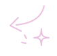
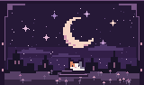

Küçük evrenime hoş geldin
Merhaba, ben Nez!
Kodlardan, piksellerden ve hayal gücümden küçük dünyalar kuruyorum.
Oyun geliştiricisi ve Bilgisayar Programcılığı öğrencisi
Portre dosyası
Nez & CalicoNez’in piksel portresi

Yıldızları sürükle veya yön tuşlarıyla taşı
Masaüstü dosyaları
Açmak için bir dosya seç.
Nezaket Demirci
Nez kim?
Ben Nez. Oyun geliştirme, yazılım ve arayüz tasarımının kesiştiği yerde üretmeyi seviyorum. Pixel-art oyunlar, küçük yazılım araçları ve etkileşimli dünyalar tasarlıyorum.
Marmara ÜniversitesiBilgisayar Programcılığı

Kurduğum küçük dünyalar
Tüm projeleri görKod ve küçük araçlar
Tüm yazılım projeleriAnime rafım
Anime arşivini açYaratıcı köşe
Not defterini açPiksel çizimler, oyun konseptleri ve öğrenme notlarımı burada bir araya getireceğim.
Ufak notlar
Şu sıralar
Bir merhaba de!
Proje fikirleri, ekip çalışmaları ve profesyonel iletişim için bana yazabilirsin.